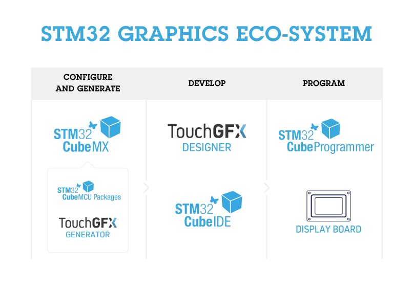

|
TouchGFX is an advanced free-of-charge GUI software, optimized for STM32 microcontrollers. Taking advantage of the STM32 Graphical features, architecture, and eco-system, TouchGFX accelerates the HMI-of-Things revolution through the creation of stunning, smartphone user interfaces on embedded devices.
The X-CUBE-TOUCHGFX is an expansion software package for STM32Cube which includes all TouchGFX software for you to develop you own UI application:
-
TouchGFX Engine: The TouchGFX library compiled for STM32, running on STM32 based products.
-
TouchGFX Designer: A state-of-the-art graphical designer tool for creating, managing and building your graphic applications. The WYSIWYG software includes different widgets, triggers and actions, making it faster and easier creating unique UIs. TouchGFX Designer supports you in easy management of image formats, multiple languages and fonts.
-
TouchGFX Generator: CubeMX plugin (Additional Software package for CubeMX) where the user can configure TouchGFX UI related peripherals and generate a board specific TouchGFX project based on the selected IDE, and latest CubeFW drivers. For peripherals unknown to CubeMX (displays, touch controllers, external memory), a template is generated helping the user to add their own code.
The figure below shows the eco-system involved in TouchGFX application development.

Key Features:
-
Smartphones Animations
-
TouchGFX enables smartphone animations like swipe, scroll, 3D effects, video playback, etc.
-
Support of transparency, alpha-blending, anti-aliased fonts and kerning
-
Instant interaction from touch display or hard-keys of your choice.
-
Easy Programming
-
TouchGFX Designer offers you Drag n' Drop programming with automatic code generation
-
More than 30 widgets (Swipe container, Animated image, shapes, clock, scroll list, etc.)
-
Custom triggers and actions
-
You can easily add own C++ developer code, making it possible for you to creating any unique UI application
-
Support of IDEs such as IAR Embedded workbench, ARM Keil, and GCC based IDEs like CubeIDE
-
Easy interfacing with any C code using the Model-View-Presenter pattern
-
Easy and fast start on UI development
-
STM32 display kits are full supported (one click) in TouchGFX Designer
-
TouchGFX Generator supports you in getting started on own STM32 hardware
-
Use demo examples for reference and to see achievable UI performance
-
Part of STM32 Eco-system
-
Smooth interoperability with CubeFW, CubeMX and CubeIDE
-
TouchGFX Project examples using CubeMX, CubeIDE and, CubeFW drivers
Related information and documentation
For more information on TouchGFX, please visit the TouchGFX Help Center.
Here you will find a "Getting Started" guide and a Knowledge Base containing articles on a wide variety of TouchGFX topics.
Update History
V4.15.0 / 05-Oct-2020
Update procedure
-
For this release additional steps might be needed. Please refer to
the Known Issues article for details.
New TouchGFX Designer Features
-
New widget: Dynamic Graph.
-
Updated all links to direct to new documentation website
-
M0 platforms now have all texture mapper features disabled by default.
-
Added support for Wipe-transition.
-
Overhauled the Add Widget Menu (is now found by clicking a button
in the top left of the canvas toolbar or pressing 'A' on the
keyboard): added search functionality, resizability.
-
The whole bottom status bar can now be clicked to bring forward the log.
-
The status bar now turns red on error and green on success.
-
Moved zoom functionality to top right of toolbar.
-
Added button to center canvas in the viewport.
-
Added keyboard shortcuts for zoom in (Ctrl + '+'), zoom out (Ctrl + '-')
and reset zoom (Ctrl + 0).
-
It is now possible to lock the position of a widget,
which also disables selection on canvas (useful for background
images, boxes).
-
Many tooltips have received a visual overhaul and also
display keyboard shortcuts.
-
It is now possible to select if fonts should be output in
mapped or unmapped format.
New TouchGFX Generator Features
-
Project updater for STM32CubeIDE adds -femit-class-debug-always flag to compilation to allow for debugging UI components.
Bugfixes in TouchGFX Designer
-
Designer would sometimes crash when importing a project with identical fonts, bitmaps.
-
Generated code in FrontendHeapBase.hpp would include
multiple copies of the same transition header file.
-
It was possible to drag and drop widgets into a scroll-list or
scroll-wheel in the treeview.
-
"Choose button key" for interactions were cleared when adding widgets.
-
Wrong default version of packages were sometimes chosen.
-
Packages would be downloaded even if they already existed on disk.
New TouchGFX Core Features:
-
New font format that allows most font data to be stored in
unmapped flash.
-
Improved partial framebuffer block transfer algorithm.
-
Added new prototypes to OSWrapper: isVSyncAvailable() and
signalRenderingDone() for use on platforms that cannot be block in
waitForVSync.
-
touchgfx::SingleBlockAllocator is removed, use
touchgfx::ManyBlockAllocator
-
New method on HAL, enableDMAAcceleration(), to disable hardware
accelerations.
-
Added TextureMapper::invalidateBoundingRects().
-
ImageConvert is using updated nlohmann-json 3.9.1. Generated
images look the same.
-
Added single stepping in simulator. Pressing F9 will start/stop
execution. Pressing F10 will execute one tick. This can also be
controlled using HALSDL2::setSingleStepping(),
HALSDL2::isSingleStepping() and HALSDL2::singleStep().
Bugfixes in TouchGFX Core
-
BoxWithBorder would not set borderColor and borderSize in constructor.
Bugfixes in TouchGFX Generator
-
Armenian (and some Cyrillic) characters were written right-to-left.
-
Quick touch and release after swipe could result in an extra
unwanted GestureEvent.
Deprecated TouchGFX Core Features
V4.14.0 / 02-Jul-2020
Update procedure
-
For this release additional steps might be needed. Please refer to
the Known Issues article for details.
New TouchGFX Designer Features
-
Updated all links to direct to new documentation website
-
Added support for the following widgets: SlideMenu
New TouchGFX Core Features
-
HAL::lockDMAToPorch default value is set to false instead of true.
-
Font::getDataFormatA4() is now called Font::getByteAlignRow() as
it may be set for 2bpp fonts and 1bpp fonts as well as 4bpp fonts.
-
GestureType is now called GestureEventType for consistency. GestureType has been deprecated and will be removed soon.
-
Added Version.hpp with macros for current version of TouchGFX.
-
ImageConvert supports image files starting with a digit.
-
ImageConvert output .cpp files with "image_" prefix.
-
ImageConvert built-in help improved.
-
ImageConvert can write an application.config template file.
-
Added Unicode::strncmp_ignore_whitespace which ignores whitespace
and not just spaces.
-
FontConvert is using updated freetype 2.10.2. This results in
slightly nicer and better aligned characters
-
ImageConvert is using updated libpng 1.6.37. Generated images look
the same.
-
Added setDurationSpeedup, getDurationSpeedup, setDurationSlowdown
and getDurationSlowdown to ScrollableContainer. This allows better control of the number of animation steps to use on a swipe gesture.
-
Extended SlideMenu widget with possibility of not needing a button.
-
Using a colortype variable as a number will automatically cast it to uint32_t instead of uint16_t.
-
Added ARMCLANG-6.x support for Keil projects.
-
Added support for Cortex-M33.
New TouchGFX Generator Features
-
Project updater for STM32CubeIDE adds -femit-class-debug-always flag to compilation to allow for debugging UI components.
-
When LTDC is enabled in CubeMX, TouchGFX Generator defaults to LTDC settings.
-
HAL::blockCopy(void* RESTRICT dest, const void* RESTRICT src, uint32_t numBytes) is now exposed through TouchGFXHAL interface.
-
OSWrapper CMSISv1 and CMSISv2 no longer require FreeRTOS middleware to be enabled; this allows usage of any CMSIS compatible RTOS
-
Project updater now supports ARMCLANG.
Bugfixes in TouchGFX Designer
-
FrontendHeap::model declared before FronendHeap::app to prevent potential errors.
-
Fixed UI Template selector not comparing available color-depths correctly.
-
Fixed .touchgfx.part file version not being checked before loading.
-
Fixed code generation of included painter when selecting a specific format for an image, L8 images and all 8 bit LCDs supported.
-
Fixed application name validation when creating new application.
-
Fixed error when dragging container type widgets inside themselves via treeview.
Bugfixes in TouchGFX Core
-
BoxWithBorder would not set borderColor and borderSize in constructor.
-
Several fixes in Unicode::snprintf(): Removed limit of 64 characters for format string. Do not force sign character on %o, %x and %X. No zeroes prefixed on %05c. Correct handling of %c with 0 as value. Sign on %s (%+s, %0s) handled properly.
-
ScrollListWithCenterSelect could crash if size was changed.
-
ScrollList with snapping would not report the correct clicked item.
-
ScrollList without snapping, non-circular could report wrong item.
-
ScrollList repects padding when item is clicked.
-
CWR Painters with setColor(color,alpha) now only accepts color. Use setAlpha(alpha) to set the alpha.
-
Cached bitmaps was not 32bit aligned with an unenven number of dynamic bitmaps.
-
LED.hpp no longer includes lpc_types.h.
Bugfixes in TouchGFX Generator
-
Fixed missing extern functions for Partial Framebuffer strategy.
-
Project updater now correctly updates STM32CubeIDE projects.
-
Fixed potential lock up when using CMSISv2 driver.
Deprecated TouchGFX Core Features
-
Deprecated functions are now marked deprecated so the compiler can issue a warning on these functions. Deprecated functions will be removed in the future.
-
Removed definition of Unicode::EMPTY.
-
Definition of PI moved from Math3D.hpp to Types.hpp.
-
The 'pi' defined in EasingEquation.hpp has been replaced by PI.
-
ImageConvert no longer supports -f, -o and -header.
-
Image::hasTransparentPixels removed.
V4.13.0 / 20-Dec-2019
Update procedure
-
For this release additional steps might be needed. Please refer to
the Known Issues article for details.
New TouchGFX Designer Features
-
Support for ".touchgfx.part" files. These can be used for external input to a project (e.g. CubeMX integration).
-
Select supported image formats for the TextureMapper by navigating to the "Framework Features" category in the "Config" tab.
-
It is now possible to override the Generate Assets, Post Generate, Compile Simulator, Run Simulator, Compile Target and Flash Target commands from within the Designer.
-
Improved zoom/scroll on canvas and auto scrolling is now enabled when dragging widgets to the outskirts of the canvas.
-
The Generate Code button shows if the current code is up to date, by displaying a blue dot if it is out of date.
-
The File, Edit and Help menus can now be opened with the shortcuts Alt + F, Alt + E, and Alt + H.
-
The Help menu includes a direct link to the TouchGFX Help Center.
-
Modify text configurations through the "Config" tab
-
The detailed log can be floated or docked within the Designer and can be opened with the shortcut Alt + L.
-
The Designer version is shown in the title bar of the window.
-
The Recent Projects list now displays the full path to a project instead of just the project name.
-
Performance improvements when moving widgets on the canvas.
-
Performance improvements when rendering rows in the image manager.
-
Performance improvements when reordering items in the widget tree.
New TouchGFX Core Features
-
TextureMapper performance improvement. Decreased rendering time in
the range of -10% to -60% depending on the image format, rendering
algorithm, hardware setup and image layout.
- Texture Mappers are disabled by default, must be enabled before
use. Read more about this feature
here.
- Added simple string printing for debugging in all LCD types.
Read more here.
- Font caching now supports GSUB tables as used in Hindi.
Read more here.
- Updated arm gcc compiler to version 7.3.1 2018q2.
- Updated gcc compiler to version 7.3.0.
- Updated mingw environment with latest version of packages.
New TouchGFX Generator Features
Bugfixes in TouchGFX Designer
-
Fixed a bug where having delay and button callback interactions could cause faulty generated code.
-
Fixed a bug where using the TouchGFX CLI to generate projects did not properly include used TouchGFX assets.
-
Fixed a bug where the canvas buffer for a screen would not be properly updated in some cases.
-
Fixed a visual bug where the error message displayed on the startup window would not disappear when retrying a download.
-
Fixed a bug where the function name of a call virtual function interaction was not properly validated.
-
Fixed a bug where progress indicator in some cases would not render correctly on the Designer canvas.
-
Fixed a bug where creating a new project and not saving would cause the default typographies to disappear when reloading the project.
-
Fixed a visual bug where the text manager would seemingly keep focus on wrong cells.
-
Fixed a bug where the properties tab for a widget would not properly display errors.
-
Fixed a bug where generating button click handlers would sometimes yield empty if/else statements.
-
Improved search fields in startup window.
-
Fixed a bug where copying a shape widget and editing a point in one of them would cause the change to happen for both.
-
Fixed a bug where scrolling by using the mouse wheel while changing fonts from within the typography picker would close the popup.
-
Fixed a bug where loading project containing a go to screen action would not load correctly.
-
Fixed a bug where expanding/collapsing a node in the widget tree view would also select the node.
-
Fixed a bug where some values were imported incorrectly when importing a UI into an application.
- Fixed a bug where navigating through folders in the image picker
was faulty.
- Fixed a bug where the order of pages in a swipe container was
presented wrongly.
- Fixed a bug where the rendering of the texture mapper on the
Designer canvas was faulty.
- Fixed a bug where validation of a removed interaction source was
faulty.
- Fixed a bug where renaming a folder with subfolders located under
assets/images could crash the Designer.
- Fixed interactions on RadioButtons generating duplicate code.
- Fixed a bug where dragging the same image from file explorer
to the Designer twice would result in faulty behavior.
- Fixed a bug where radio button interactions would sometimes
generate duplicate code.
- Fixed a bug where overriding a canvas buffer could result
in a newline missing in the generated code.
- Fixed a bug where the Designer would generate faulty code
when using Turkish region format.
- Fixed a visual bug where having long text in custom action/trigger
text boxes would cause unwanted shifts in the UI.
- Fixed a crash bug where a sequence of steps after deleting the
last custom container in an application would cause the Designer
to crash.
- Fixed a bug where copying a custom container instance from a
screen to a custom container definition did not work.
- Fixed the Matching UI Templates filter not working as intended.
- The Designer now supports application names that include periods.
- Fixed a bug where changing a slider with a style from horizontal
to vertical would result in the style not being correctly set.
- Fixed a bug where changing the font of a typography would visually
not display the correct font name some places in the UI.
Bugfixes in TouchGFX Core
-
TextureMapper: blending on edges corrected/improved in Bilinear
mode.
- TextureMapper: minor image quality improvements in Nearest
Neighbor mode.
- Bugfix for text order in arabic text "12:34" which would
previously render as "34:12" in RTL.
Bugfixes in TouchGFX Generator
Deprecated TouchGFX Core Features
-
Removed definition of deprecated TRANSPARENT_COL.
- Removed Drawable::getType().
- Removed HAL::blitSetTransparencyKey().
- Removed HAL::registerTextCache().
- Removed HAL::cacheTextString().
Older TouchGFX versionsChangelog
License
Licensed under Software License Agreement SLA0048, (the "License"). You may not use this package
except in compliance with the License. You may obtain a copy of the
License at:
For complete documentation on STM32 ODE visit www.st.com/stm32ode
|